This was originally intended to be a 2-part blog post, but a sideline into the interaction of monad modules and distributive laws turned into something of blog length, making this part 2 of 3. But it should be possible to read it independently of the previous installment.
Previously we saw that monadic lenses (where the forwards part is pure, but the backwards part lives in a monad) can be defined in van Laarhoven style by quantifying over all functors which are right modules of the monad, that is, they have a natural transformation compatible with the structure of .
If we want to also have the monad on the forwards pass then the concrete get/put definition of lenses is no longer possible, and the fundamental definition is kleisli optics, which involve an existential type. Their van Laarhoven encoding, which will be the topic of part 3, is functors which are both a right module and also which the monad distributes over. The topic of this post is exploring what this means and how these two structures interact. This is a currently half-baked theory of “distributive bimodules”.
Like we did for monadic lenses, we’re going to be instantiating to be . This should ring alarm bells because it looks like we need to distribute over itself. But it’s subtly different: we need to distribute not over itself but over its underlying functor. In Haskell you can’t tell the difference except by which letters we choose:
class Distributive m f where
distribute :: m (f a) -> f (m a)A distributive law of a monad over a functor needs to satisfy two equations: 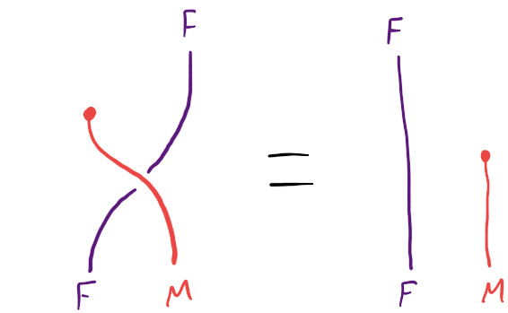 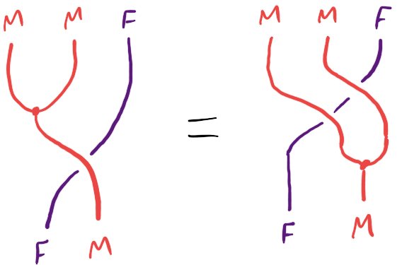
These are string diagrams in the monoidal category of endofunctors with functor composition (in algebraic order), where the monad is just a monoid, what’s the problem? I learned about this class of string diagrams from Dan Marsden, and a lot more information about it can be found in the paper Equational reasoning with lollipops, forks, cups, caps, snakes, and speedometers by Hinze and Marsden.
It turns out that this definition – a monad distributing over a mere functor – is the definition that the nLab takes as primary. A distributive law of monads is one of these plus 2 extra axioms for compatibility with the other monad’s structure.
It turns out that every monad distributes over its underlying functor like this: 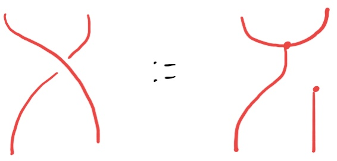 which in Haskell is written like this:
instance (Monad m) => Distributive m m where
distribute = fmap pure . joinThis definition looks very strange because it doesn’t preserve connectivity of the string diagram – but it does work. The first axiom is verified like this: 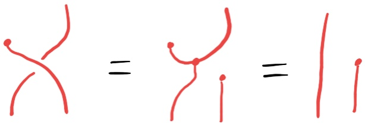 and the second axiom like this, where I’ve highlighted the appearances of the distributive law to make it clear what’s happening: 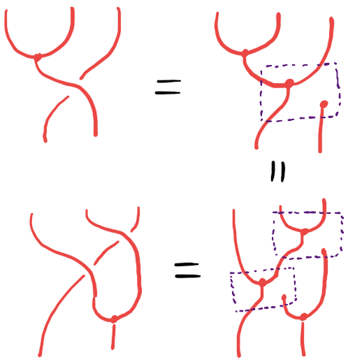
Now, suppose we have a functor that’s both a right module of our monad and which the monad also distributes over. Given these two structures, additionally becomes a left module of with the left action given by 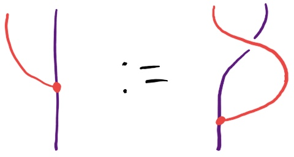
It’s easy to verify the 2 axioms of a left action using the axioms for a right action and a distributive law.
There’s an interesting question of whether this is automatically a bimodule, which is a functor which with both a left and a right action which commute with each other: 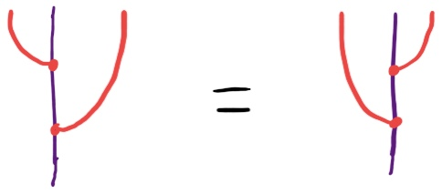
If we only assume what we have so far, this doesn’t seem to follow, so we need some other condition for how the right action and distributive law interact. The obvious-looking axiom for a right action and a distributive law to cohere is 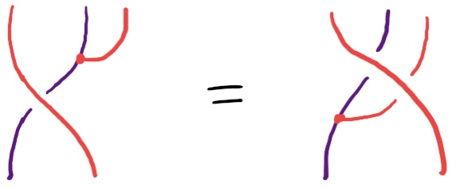
But this is secretly using distributivity of the monad over its underlying functor, so this axiom becomes the much more questionable-looking 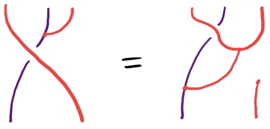
This is, notably, different to the definition of a distributive law of a monad over a right module (definition 13) in the paper Modules over monads and their algebras by Piróg, Wu and Gibbons, which requres a distributive law of the monad over itself as a monad. Under their definition, most monads of interest can never distribute over any of their right modules, since they don’t distribute over themselves.
If we assume our axiom then we do indeed have a bimodule: 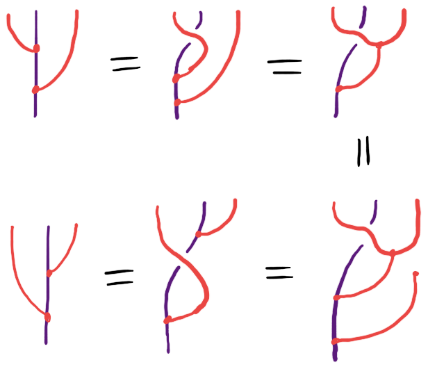
I also think that all of the examples we need satisfy this axiom. Since it looks so questionable I’m not confident that this structure is a good idea, but provisionally I’m going to name it – a functor that is a right module of a monad, which the monad distributes over and satisfying this axiom – a distributive bimodule. Since the coherence axiom is important, I’ll also write it the old fashioned way: 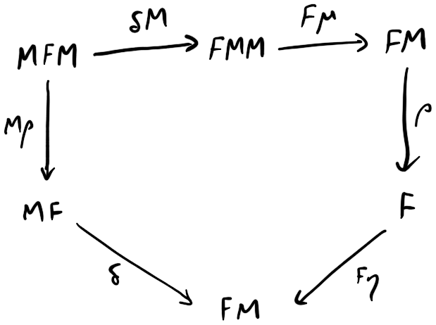
And finally, in Haskell, the same axiom is written
distribute . fmap act = fmap pure . act . fmap join . distributeAnyway, this entire post was a big and not entirely necessary sideline. I don’t know whether this axiom ought to be required or not, but the code works the same either way. Speaking of which, we’ll pick up the code again in the next installment.
Thanks to Dan Marsden and Zanzi for helping me out with working all this out!